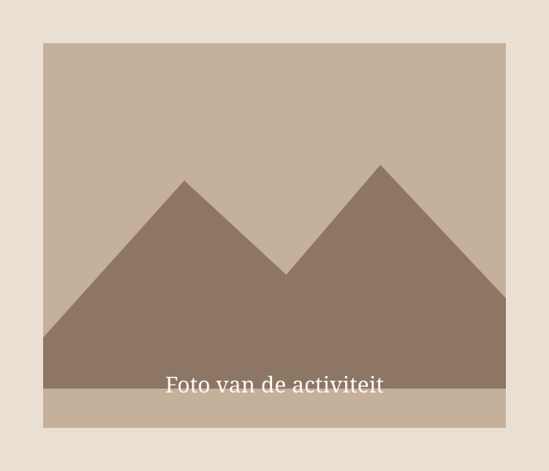

Mijn ervaring
Wat heb ik gedaan en geleerd?
Vervang deze tekst door een beschrijving van de activiteit, waarom je eraan deelnam en wat je eruit hebt meegenomen.
Je kunt hier later ook foto's, een datum, reflecties of andere relevante informatie toevoegen.
← Terug naar alle activiteiten